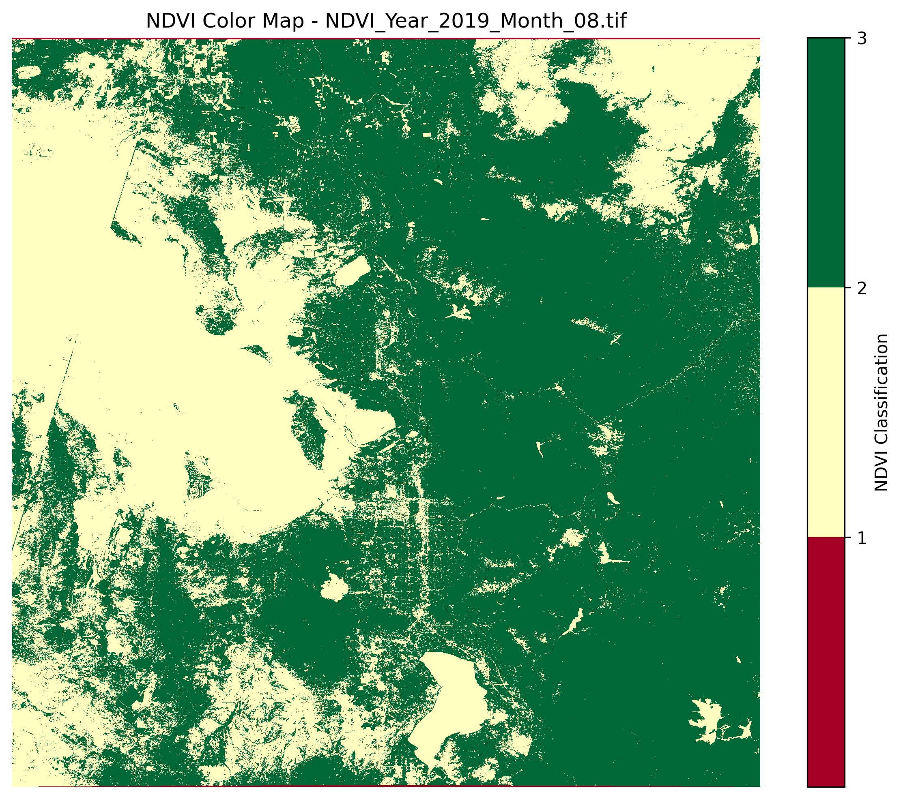
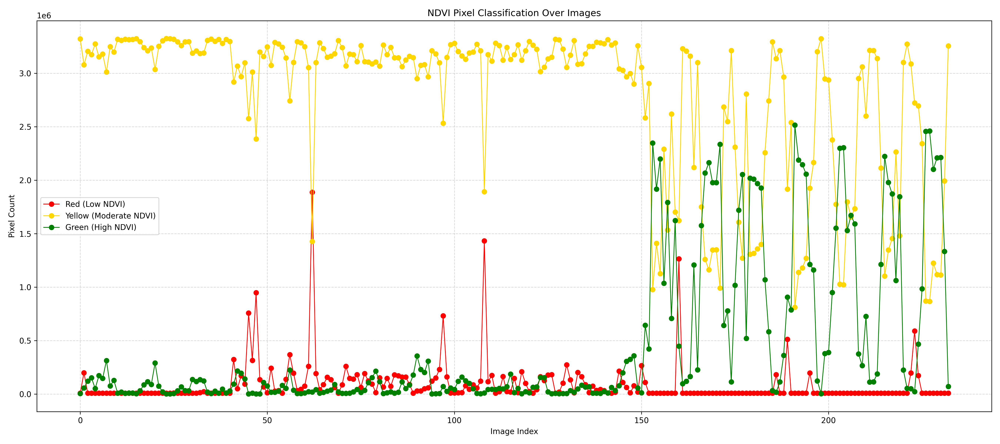
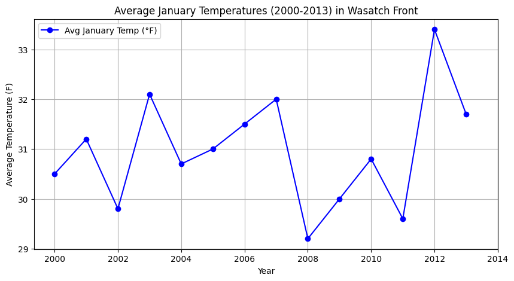

Why Monitor the Wasatch?
The Wasatch Front is experiencing rapid environmental changes, from rising temperatures to worsening air quality. By collecting and analyzing real-world data, we aim to provide insights into these shifts and their impact on local ecosystems and human health.
NDVI Trends Over Time
Using satellite imagery, we measure vegetation health through the Normalized Difference Vegetation Index (NDVI). This helps us track long-term changes in plant life, from seasonal shifts to the impact of droughts and urban development.
Air Quality & Temperature Changes
Rising temperatures and wildfires contribute to worsening air quality. Our data visualizations illustrate how these factors interact, showing trends in pollution levels, extreme heat days, and their potential effects on public health.
